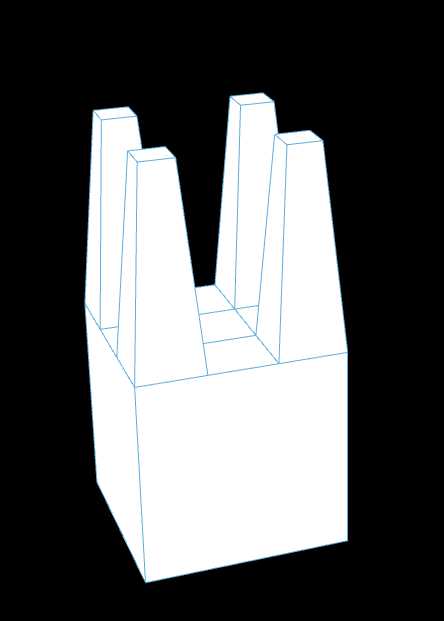
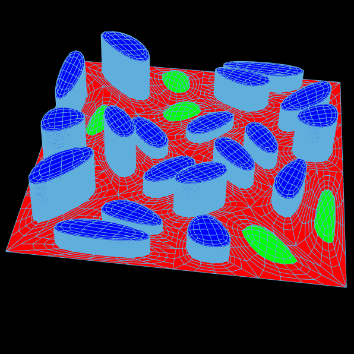

import Rhino.Geometry as rg
import math
rule1_predecessor = "X"
rule1_successor = "F+[[X]-X]-F[-FX]+X"
rule2_predecessor = "F"
rule2_successor = "FF"
genotype = "X"
for i in range(iterations):
genotype = genotype.replace(rule1_predecessor, rule1_successor)
genotype = genotype.replace(rule2_predecessor, rule2_successor)
vt = rg.Point3d(0,0,0)
vertices = []
angles = []
lines = []
for c in genotype:
if c == "+":
# Turn right
angle -= rotation
elif c == "-":
# Turn left
angle += rotation
elif c == "F":
# Forward
rad = math.radians(angle)
next_vt = rg.Point3d(length*math.cos(rad) + vt.X, length*math.sin(rad) + vt.Y, 0)
lines.append(rg.Line(vt, next_vt))
vt = next_vt
elif c == "[":
# Save position
vertices.append(vt)
angles.append(angle)
elif c == "]":
# Restore position
vt = vertices.pop()
angle = angles.pop()
L_system = lines
import mola
from mola import module_rhino
# Create an empty mesh
m = mola.Mesh()
# Define vertices
a = mola.Vertex(0, 0, 0)
b = mola.Vertex(15, 0, 0)
c = mola.Vertex(15, 10, 0)
d = mola.Vertex(0, 10, 0)
# Add vertices to mesh
vertices = [a, b, c, d]
m.vertices = vertices
# print(m.vertices)
f = mola.Face([a,b,c,d])
f.color = (0.6,0.6,0.6,1)
m.faces.append(f)
Mesh = module_rhino.display_mesh(m)
import mola
# m = mola.construct_icosahedron(Radius)
# Mesh = module_rhino.display_mesh(m)
torus = mola.construct_torus(Radius, Radius2)
mola.color_faces_by_curvature(torus.faces)
# mola.color_faces_by_compactness(torus.faces)
# mola.color_faces_by_area(torus.faces)
Mesh = mola.module_rhino.display_mesh(torus)
spheres = []
for v in torus.vertices:
radius = mola.math_map(v.z, -4, 4, 0.05, 0.5)
s = mola.construct_sphere(radius, v.x, v.y, v.z,9, 9)
temp = mola.module_rhino.display_mesh(s)
spheres.append(temp)
Spheres = spheres
https://en.wikipedia.org/wiki/Catmull%E2%80%93Clark_subdivision_surface
molaMesh = mola.subdivide_mesh_catmull(molaMesh)
molaMesh = mola.subdivide_mesh_extrude_tapered(molaMesh, faceAngles, fractions, doCaps)
molaMesh = mola.mesh_offset(molaMesh, 0.1)
import mola
import math
import Rhino.Geometry as rg
molaMesh = mola.construct_sphere(radius=5, u_res=8, v_res=8)
for v in molaMesh.vertices:
if v.z > 0:
v.z *= 1.8
molaMesh = mola.subdivide_mesh_catmull(molaMesh)
# Get height value
faceAngles = molaMesh.face_properties(mola.face_angle_vertical)
# print (faceAngles)
for i in range(len(faceAngles)):
faceAngles[i] = abs(math.pi - abs(faceAngles[i]))
faceAngles = mola.math_map_list(faceAngles, 0.1, 3)
# Get fractions
zPositions = molaMesh.face_properties(mola.face_center_z)
fractions = mola.math_map_list(zPositions, 0.9, 0.1)
doCaps = [True] * len(molaMesh.faces)
for i in range(len(zPositions)):
if zPositions[i] > 0.2:
doCaps[i] = False
molaMesh = mola.subdivide_mesh_extrude_tapered(molaMesh, faceAngles, fractions, doCaps)
molaMesh = mola.subdivide_mesh_catmull(molaMesh)
molaMesh = mola.subdivide_mesh_catmull(molaMesh)
molaMesh = mola.mesh_offset(molaMesh, 0.1)
mola.color_faces_by_horizontal_angle(molaMesh.faces)
Mesh = mola.module_rhino.display_mesh(molaMesh)
# outTemp = []
# for face in molaMesh.faces:
# outTemp.append(rg.Point3d(mola.face_center(face).x, mola.face_center(face).y, mola.face_center(face).z))

import Rhino.Geometry as rg
import mola
mMesh = mola.construct_box(0,0,0,10,10,10)
dividedMeshes = mola.subdivide_face_split_grid(mMesh.faces[1], 3, 3)
dividedMeshes.extend( mola.subdivide_face_extrude_tapered(dividedMeshes[0], 10))
dividedMeshes.extend( mola.subdivide_face_extrude_tapered(dividedMeshes[2], 10))
dividedMeshes.extend( mola.subdivide_face_extrude_tapered(dividedMeshes[6], 10))
dividedMeshes.extend( mola.subdivide_face_extrude_tapered(dividedMeshes[8], 10))
dividedMeshes.pop(0)
dividedMeshes.pop(1)
dividedMeshes.pop(4)
dividedMeshes.pop(5)
mMesh.faces.pop(1)
mMesh.faces.extend(dividedMeshes)
Faces = mola.module_rhino.display_faces([mMesh.faces[1]])
Mesh = mola.module_rhino.display_mesh(mMesh)
for face in mMesh.faces:
face.group = "plot"

import mola
import random
import Rhino.Geometry as rg
mMesh = mola.construct_single_face(
[mola.Vertex(0, 0, 0), mola.Vertex(10, 0, 0), mola.Vertex(10, 10, 0), mola.Vertex(0, 10, 0)]
)
newMesh = mola.Mesh()
for face in mMesh.faces:
newFaces = mola.subdivide_face_extrude_to_point_center(face, 0)
newMesh.faces.extend(newFaces)
mMesh = newMesh
mMesh.update_topology()
mMesh = mola.subdivide_mesh_catmull(mMesh)
newMesh = mola.Mesh()
for face in mMesh.faces:
newFaces = mola.subdivide_face_split_grid(face, 2, 1)
newMesh.faces.extend(newFaces)
mMesh = newMesh
for face in mMesh.faces:
face.group = "plot"
newMesh = mola.Mesh()
for f in mMesh.faces:
if f.group == "plot":
new_faces = mola.subdivide_face_extrude_tapered(f, 0, 0.3, True)
for nf in new_faces[:-1]:
nf.group = "circulation"
nf.color = (1, 0, 0)
# [-1] is take the last element [:-1] is for taking all elements
new_faces[-1].group = "construction"
new_faces[-1].color = (0.5, 0, 1)
newMesh.faces.extend(new_faces)
else:
newMesh.faces.append(f)
mMesh = newMesh
########################################################################
newMesh = mola.Mesh()
for face in mMesh.faces:
if face.group == "construction":
if random.random() < 0.2:
newFaces = mola.subdivide_face_extrude_to_point_center(face, 1)
for newFace in newFaces:
newFace.group = "park"
newFace.color = (0, 1, 0)
newMesh.faces.extend(newFaces)
else:
floorNumber = random.randint(5, 20)
buildingSurface = [face]
for i in range(floorNumber):
buildingSurface.extend(mola.subdivide_face_extrude(buildingSurface[-1], 0.1, False))
buildingSurface.pop(-6)
for newFace in buildingSurface:
newFace.group = "building"
newFace.color = (0, 0, 1)
newMesh.faces.extend(buildingSurface)
newMesh.faces.append(face)
newMesh.update_topology()
newMesh = mola.subdivide_mesh_catmull(newMesh)
newMesh = mola.subdivide_mesh_catmull(newMesh)
mMesh = newMesh
Mesh = mola.module_rhino.display_mesh(mMesh)
--- Growing, Growing, Brighter Everyday ! ---